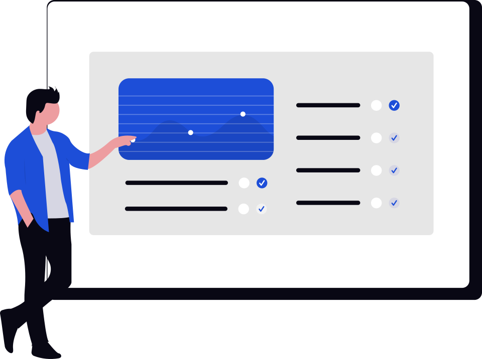
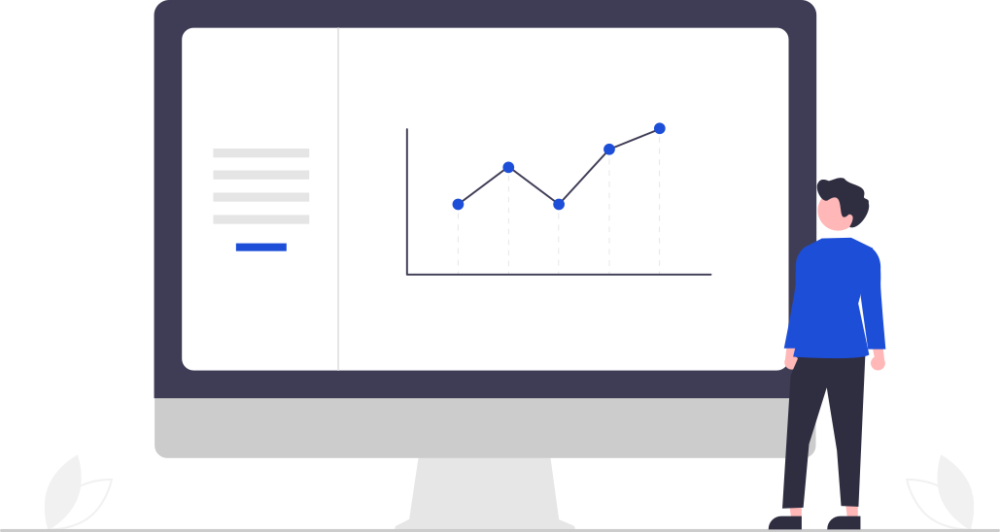
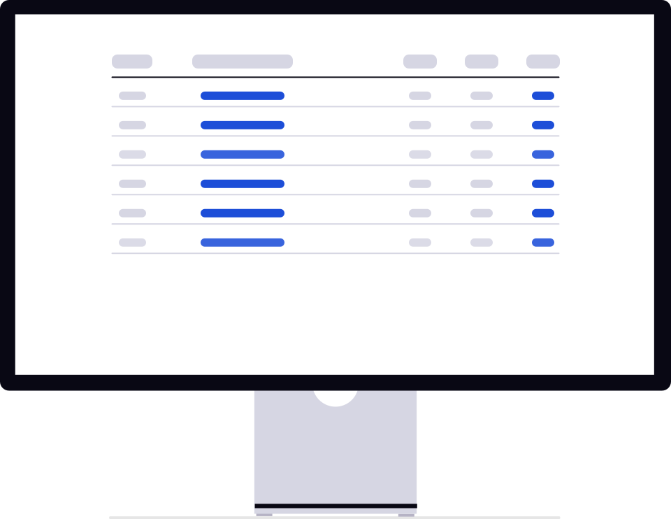
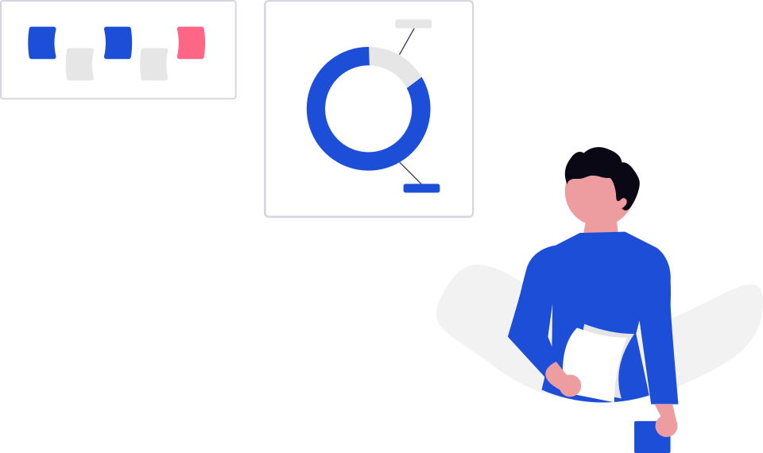
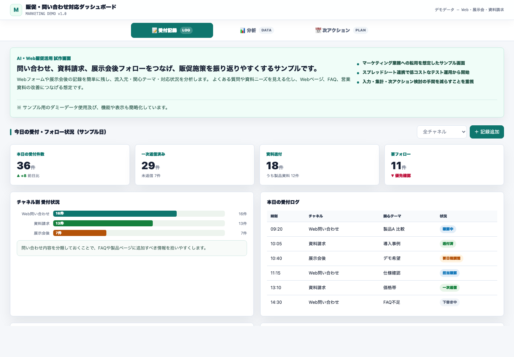
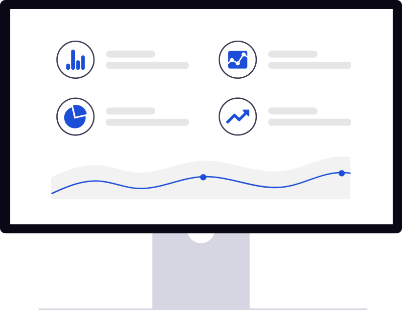

AI活用
運用中
業務フロー整理ツール
依頼受付・資料チェック・FAQ作成・進捗管理を統合した業務支援画面。
- 複雑な情報を構造化して入力
- 確認観点と資料参照を標準化
- FAQ・コンテンツ改善に転用可能
現場の「これ、なんとかならない？」を聞き取り、スプレッドシートとAIで素早くプロトタイプを制作。 テスト運用で業務フローを固めてから、バックエンドエンジニアへ引き継ぐ進め方で作ったサンプルです。

「まず小さく動くものを見せる」をベースに、現場検証を経てから本実装へつなぎます。
現場担当者と話し、Excel・紙・口頭で回っている業務の流れと困りごとを整理します。
AIでフロント仕様を生成し、Google スプレッドシートをDBに見立てて動く画面を短期間で制作します。
実際の業務で使ってもらい、画面の過不足や運用ルールをフィードバックから修正します。
業務フローが固まった段階で、仕様・画面・運用知見をバックエンドエンジニアへ渡し本実装に移行します。
提出用にデータ・デザイン・機能を変更したデモ版です。

依頼受付・資料チェック・FAQ作成・進捗管理を統合した業務支援画面。


商品・仕様・条件を統一基準で整理し、検索・差異チェックを効率化する画面。



Web問い合わせ・資料請求・展示会フォローを記録し、改善施策へつなげる画面。




いずれも実際の業務課題をもとに設計・制作したものです。 提出用にデータ・デザイン・一部機能を変更しており、社名・数値はサンプルに置換しています。
共通しているのは「まず動くものを見せて、現場で検証してから作り込む」という進め方です。 スプレッドシート＋AIでプロトタイプを素早く作り、フィードバックを反映したうえでエンジニアへ引き継ぐことで、手戻りの少ない開発を実現しています。